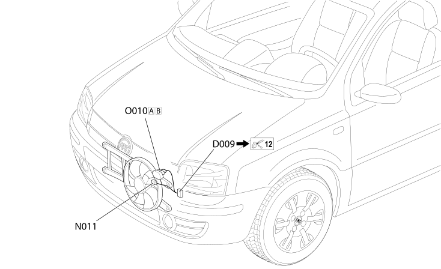

11 RADIATOR
- Path
- Electrical equipment > 2 WIRING > 11 RADIATOR
- Kind
- wiring harness
- Applies to
- engines: 1.3 JTD 16v; all production periods; only with equipment: Air Conditioner
- Interactive page
- https://sloeber94.github.io/elrnDB-fPnd/en/#/2751667
Applies to: engines: 1.3 JTD 16v; all production periods; only with equipment: Air Conditioner
